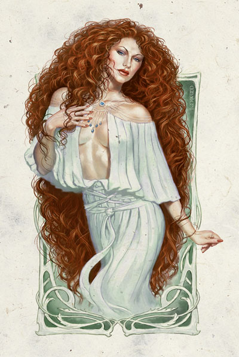

资料来源：费伦大陆信仰与神系介绍 Faiths & Pantheons
Sune 淑娜
火发Firehair，火发女士Lady Firehair

强大神力
标记：一张有着红色头发和象牙色肌肤的美丽女子的脸

所在位面：明水界Brightwater
阵营：叛逆善良
神职：美丽，爱情，激情
敬拜者：恋人，艺术家，半精灵，冒险者
牧师阵营：CG,CN,LG（仅有圣武士）,NG
领域：混乱，魅惑，善良，保护
喜好武器：一条柔软的丝绸腰带(A silken sash)（鞭）
作为所有神中最热情的，淑娜善良而有时又有点反复无常。她总是以一个浑身闪耀着光辉，美得难以置信的美丽红发女性形象出现。她的深深的激情中时常流露出不经意的挑逗，并与泛费伦的许多神有过浪漫的关系（...维纳斯...）。淑娜喜欢别人的注意和诚挚的赞美，并尽量避开那些恐怖的（...班恩...）和土里土气（...查提...）的神。火发女士关爱并保护着她的信徒，而她的保护这个世界的美丽的信徒们也乐于如此。
尽管被那些认为爱与美是弱小的标志的人轻视，淑娜的教会仍在整个费伦被人广泛的爱戴，她的教义也有着众多的拥护者。不过，因为绝大多数淑娜教徒都被视为轻浮、爱慕虚荣、而且肤浅，不过至少没有什么危害性，淑娜的教会的社会影响力并不如她们在其他方面的表现突出。淑娜的信徒常对哈娜丽-克拉妮尔Hanali Celanil--她是精灵的美神--的信徒怀有强烈的竞争意识。
淑娜的牧师会在早上进行沐浴（或至少清洗他们的双手）之后进行祈祷。立春Greengrass和中秋之夜Midsummer Night（好像马上就要到了呢^_^）是淑娜的圣日，这时教会会在户外进行大规模的庆祝，而且人们可以在进行庆祝的森林和公园里整夜互诉爱慕之情（这个......这个......翻译到这个地步就可以了吧，不过还是好直白......）各个神庙还会庆祝很多他们自己独有的圣日。每月至少一次，淑娜的教会会举行一次大狂欢Grand Revel。这是一次盛大的聚会，有舞蹈，有诗歌朗诵，有最感染人心的美丽和最富激昂感情的音乐，甚至连外位面者outsider也会被这种激情吸引来。另一种爱情盛宴A Feast of Love则更私人化，更亲密化，只对最坚定的信徒开放。她们躺在柔软的长榻上，享受着甜酒，开胃菜和松软可口的小点心，欣赏着舞者的独舞，舞蹈间中会点缀一些浪漫诗词，散文的朗诵以及优秀歌手所唱的情歌（......好奢侈的生活......我也想要......）。这些盛宴通常在参与者们各自继续一些私人聚会（......没错，只是私人聚会而已，不要想歪了......）的情况下结束，不过吟游诗人们常会留下来继续为那些不想参加私人聚会的人们讲述宫廷中的爱情故事或者费伦的神秘传说。淑娜的信徒们有时也会以个人身份向淑娜祈祷，这通常是通过站立在一个水池或浴池中，注视着一面只被自然光或烛光照亮的镜子。淑娜会通过在镜中出现的信息来指导她们，一般是使用改变祈祷者在镜中反射出的影像。近几年来大量冒险者的加入使得过去淑娜教会中严重的性别不平衡状况大为减轻，目前女性教徒只比男性多四分之一。淑娜的牧师在兼职时通常是吟游诗人、心灵守卫heartwarders(faith and pantheon的进阶职业，有很多提升，不过最大的好处是每升一级加一点魅力^_^，所以这个职业美女一定很多^_^)或者游荡者。
历史/关系：
淑娜与哈娜丽-克拉妮尔以及莎尔妮斯Sharess--她是一位身材矫健而优美，富有诱惑力的女神（......诱惑和欲望的女神，我喜欢......），在动乱之年Time of Trouble中被淑娜从莎尔Shar的阴影下所解救--共同拥有永金湖Evergold--一片神圣水域。淑娜也是许多跟她拥有共同思想的神的盟友，比如苏伦Selune，米丽尔Milil和洛山达Lathander。淑娜为丽拉LIiira服务，同时也曾是苏伦的主人。不过现在月亮女士已经离开她再次去追寻自己的道路。淑娜的形象使得很难有哪个存在能真正长时间生她的气，所以她也没有什么真正的敌人。不过她不喜欢奥利尔Auril,马拉Malar,塔洛斯Talos,安博里Umberlee,泰伦娜Talona和坦波斯Tempus,因为他们通常要为对美好事物的破坏负责。坦波斯认为她的厌恶不值报复，同时他认为她无关紧要，轻浮，因而不值得与之争斗。淑娜在动乱之年Time of Trouble里成为了沙尔Shar的敌人,因为暗夜少女Nightmaiden对莎尔妮斯的控制就是由于淑娜而无法得逞。所以火发女士现在正悄悄的支持着密斯特拉Mystra赢得与夜之女Mistress of the Night间即将来临的战斗。
教条：
美不仅停留于表面。它发自于一个人的内在核心并体现出他对待这个世界的真实一面。相信爱情，相信真爱终将获胜。跟随你的心灵，走向你真正的命运。淑娜爱着包括你在内的每个人，所以就在火发女士的爱中迷失自我吧。每天进行一次爱情表演，唤醒他人心中的爱意。每天至少一次，表达对爱的感激。支持你所发现的所有美。维护各种类型的美丽物品，并支持，资助并保护那些创造它们的人。尽可能保持优美体形，并在合适的情况下展示你的吸引力。依你的个人形象设计最合适的发型和衣着，尽力使看到的人感到高兴和愉悦。此外，不要离群隐居，而是寻找机会以盛装的表演向你身边的人表现自己，并以这种方法来通过爱和期望打动他们。爱那些回应你的出现的人，并为缺乏爱的地方带来友爱与赞美之花。（这一段我觉得翻译得似是而非，尤其有些词我甚至不理解是否有双关意义，所以大家看看就好，有错误可要赶紧提出来。--译者注）
牧师与神庙：
淑娜的牧师是唯美与享乐主义者，她们努力在所有事物中寻找快乐与美。追求艺术享受就是她们的生命。淑娜教会的神职人员购买所有她们发现的美丽的绘画作品，雕塑和手工艺品，资助那些需要资金的优秀艺术家，并愿为这些艺术品付出更多的钱以提高价格，制造更多的需求，以此提高美好物品的产出供给。她们会一直这么做，只要教会负担得起而条件又允许。她们会在必要时进行伪装，当淑娜的牧师执行一项肮脏的任务时，伪装可以保护她的身份不被认出。虔诚的牧师常会雇用或支持冒险者和那些以消灭破坏美好事物的存在为己任的人。所有淑娜的牧师都努力以个人方式创造美。要么选择成为某种静态艺术的创作者（吹制玻璃制品，印刷，编制挂毯都很时髦），如果不行就去做一名舞者。当她们中的某一个在创造美好事物的手艺上获得经验后，她会帮助其他人训练学习以传播它，并不会排斥任何真心想学的人，所有在这些训练和创作中赚到的钱都会交给教会以促进各地的爱与美的发展，
尽管淑娜的牧师会拒绝她们不希望的亲近行为，她们还是尽力在自己与其他人间建立友谊和浪漫感，所以无论到达费伦的哪个角落，她们都会把爱传播到那里。因为孤独在这个传教过程中不可避免（但最终目的是为了加入到火发女士的爱之中），她们被视为传播友谊的勤勉教会。所有人，即使是最封闭的或者信仰与淑娜的教义背道而驰的人，也会得到类似礼品或建议之类的帮助以使得他们更加美丽。淑娜的牧师支持艺术工匠，在他们与其他人之间建立友谊和爱情，并摧毁那些摧残美丽事物的人。淑娜注意到了泰摩拉Tymora对冒险者的保护并希望吸纳这部分信仰者资源，所以教会支持那些希望找寻失落的珠宝或无价的艺术作品的勇敢的骑士和探险家，以及那些为了拯救他们的真爱而踏上旅途的冒险者。
淑娜教会的神庙有的是设计充满梦幻感而美丽得令人震撼，有的则是结构高雅古典，它们都装饰着高度比地面高的风景雕塑，中间留下绘有图画的小径和迷人而隐蔽的休息角落让人们分享爱，美丽，和激情(love,beauty,and passion)（......原文照翻......不过这是神庙吗......一定是我想歪了......一定的......）。许多淑娜教会的神庙都有着华丽的花园，花架和凉亭上缠绕着常青藤，经过仔细修建的树和灌木。在柔和的魔法光源照耀下的精美雕塑和奢华的喷泉则是绝大多数淑娜神庙花园中的焦点。
淑娜的信徒并不羞于展露她们的身体。淑娜牧师的标准仪式服装是男性的僧侣袍和女性的修女服，都是被染成深红色的紧身而可以显出体形轮廓的服装。头发通常是留长发，允许在仪式时披散。在其他时候，牧师们会用深红色的丝带束发，并根据情况选择合适的服装，不过通常会选较好看的。尽管红发被视为被神触摸的结果，所有的肤色和发色都同样受欢迎，只是必须是未婚而美丽。
淑娜的教会松散而无组织，虽然领导者更替有规律，神职人员却总有自己的想法。通常最有魅力和最吸引人的神职人员会成为淑娜的高阶牧师。淑娜的牧师几乎不会多考虑什么就扔下一切投身到荒野中，尤其是当这些冒险的目的是某些美好的事物或美丽的人时，这种举动使得教会中很少出现什么丑闻。
Sune 淑娜
20级术士Sorcerer/10级牧师Cleric/10级吟游诗人Bard
中等体形外位面生物（无序，善良）
神格等级：16
生命骰：20d8+140(外位面生物)+20d4+140(战士)+10d8+70(牧师)+10d6+70(吟游诗人) 生命值 800点
优先攻击权：+13(+9 敏捷dex，+4改善先攻improved init)
速度：60呎
防护等级：84 （加9敏捷dex，加16神力divine，加29自然nature，加20偏转deflection）
攻击：+5混乱防御锋锐震动鞭（好长）+5chaotic defending keen shock sash +70/+65/+60/+55远程或法术+63近战/+65远程接触。总是得到20的攻击检定。掷骰检定为致命一击。
伤害：+5混乱防御锋锐震动鞭 1d2+5/18-20致命一击+1d6电系伤害/18-20；或者通过法术。总是造成最大伤害（鞭击7点+6电系）
面宽/可触距离 ：5呎 及5呎/5呎
特殊攻击：领域力量，超凡神圣能力（salient divine abilities），类法术能力，超度不死生物/每天22次。
特性：吟游诗人知识+17，吟游诗人音乐（countersong逆转之歌，fascinate迷惑，inspire competence鼓舞能力,inspire courage鼓舞勇气，suggestion暗示），神圣笼罩（16哩，DC46）,神圣免疫，DR51/+4，魔宠（猫），快速医疗36，火系抗力36，神祗国度（100哩外界，1600呎主位面），随意位面传送,远程沟通16哩，SR68，随意无误传送，；领悟，交谈，阅读所有语言并直接与16哩内的任何存在交谈。
豁免值：坚韧+55，反射+57，意志+60，在豁免时总是得到20
能力：力量24，敏捷28，体质25，智力24，感知35，魅力50
技能：炼金术+29，评价+41，欺诈+89，攀爬+86，手艺（印刷）+46，手艺（雕刻）+46，集中+81，外交+111，收集情报+56，医疗+ 73，旁敲侧击+57，胁迫+42，判断方向+51，知识（奥术）+66，知识（宗教）+46，聆听+30，表演+59，专精（药草学）+51，占卜+ 86，察觉动机+81，法术知能+86，侦察+29。在判定时总是获得20。
特技：配药，战斗施法，战斗反射，制造魔棒（rod）,制造魔杖，闪避，异种武器熟练（鞭），专家，铸戒，高级法术专注（魅惑系），重击改善（鞭），法术极效，灵活，法术瞬发，无声法术，法术专注（魅惑系），法术穿透，法术持久。
神圣免疫：属性伤害，属性吸取，酸，寒冷，即死效果，疾病，粉碎术，电，能量吸取，心智影响效果，瘫痪，毒，睡眠，震慑，改变形态，监禁术，放逐术。
超凡神圣能力：改变形态，改变现实（复制法术豁免DC54，暂时非魔法物体持续16天，暂时魔法物体或生物持续16个小时），改变大小，化身（最多20 个），召唤生物（最多同时召唤16个妖精fey，每个最多拥有16HD），神力之刃（每天28次，射程16里，34d12伤害），神力祝福（魅力，每天最多16个生物），神力快速医疗，神力灵感（爱与希望，豁免DC46，每天最多16个生物），神圣护盾（阻止160点伤害，每天10次），神力法术专注（魅惑系），神力施法，神力光辉160ft，能量风暴（火系，每轮16点火系伤害和16点神圣伤害），额外领域（混乱），生命礼物（gift of life），增强法术抗力，紧急抗法术，复生（10d10-16天内在他的国度内被杀，或者10d10-32天内如果他的国度是在神力所处的外位面），变形，混乱之波（半径160ft，意志豁免DC44）。
领域力量：在+1等级上施放混乱系法术，每天16次在一分钟内魅力+4，在+1等级上施放善良系法术，每天16次保护权杖（接触物品在下一次豁免检定时获得+10的抗力奖励，最多持续1小时）。
类法术能力：淑娜使用下列能力，相当于26级施法者，除了善良和混乱法术，这时他作为27级施法者。豁免DC为46+法术等级。援助术，移动物体，防魔法力场，剑刃障壁，平静情绪，混乱之锤，魅惑怪物，魅惑人类，混乱之袍，需求术，驱除邪恶，驱除秩序，控制怪物，操纵情绪，geas/quest，神圣荣光，神圣重击（Holy Smite）,圣言术，疯狂术，防护邪恶光环，防护秩序光环，精神阻挡，棱镜球，防护元素，防护邪恶，防护秩序，恢复术，避难所，粉碎术，他人护盾，法术免疫，法术抗力，建议术，九级怪兽召唤术（只能作为混乱或善良法术），混乱之言。
吟游诗人法术：3/8/8/7/5 基本DC=32+法术等级，或魅惑系48+法术等级。
牧师神术：6/8/8/7/7/5 基本DC=24+神术等级，或魅惑系40+法术等级。
术士法术：（0-20级）6/11/11/11/11/10/10/10/10/9/4/4/4/3/3/3/3/2/2/2/2/；基本DC=32+法术等级，或魅惑系48+法术等级。
携带物品：淑娜穿着的一条轻纱可作为+5长鞭使用，附带混乱，防御，锋锐，和震动的特效。
施放级别：25级；重量：2lb。
其他神圣能力
作为一个强大神力，淑娜在任何掷骰中（包括攻击骰，伤害骰，豁免）自动获得最好的结果。她是不死之身。
感知：淑娜可以看见，听见，触摸和嗅到16哩的距离。作为一个标准动作，她能够感知到任何16哩内的信徒，圣迹，与她有关的物体和任何她的名字在一个小时内被说出的地点。她能够立即将她的感知延伸到20个地方。她立即能够在2个地方阻止神格等级等于或者小于他的神的感知力量，时间最长可达16个小时。
神力感知：淑娜可以在任何美好生物或物品被创造或被破坏之前或之后10到16天内知道这件事。她还可以感觉到所有生物之间产生的爱情和......（我就不翻了吧）。
自动动作：淑娜能够作为一个自由动作使用集中，手艺（印刷），手艺（雕刻），外交，和表演，只要该项任务的DC在30或者30以下。她每轮能够完成20个类似的自由动作。
创造魔法物品：淑娜能够创造任何产生改变外形或情绪效果的魔法物品。
化身（Avatar）
淑娜极少出现在凡人面前。当她被看到时，她的化身看上去是一个拥有不可能在人世出现的美丽的人类女性，只穿着一件半透明的轻纱长袍。她那长得不可思议的柔软红发犹如跳跃的火焰。不过尽管总是红发，她出现时的其他外貌特征常常改变，有时她是金色的皮肤和杏仁形的瞳孔，有时她是红色皮肤和琥珀色的眼睛，有时她皮肤微红而脸型骨感，而另一些时候则有着如雪的肌肤和如天空般湛蓝或如森林般碧绿的眼眸。
淑娜的化身：与本体相同，除了以下之外:
神格等级8，防护等级68（触摸47，措手不及59），攻击+62/+57/+52/+47远程（1d2+5/18-20，+5混乱防御锋锐震动鞭） 或者法术+55 近身触摸或者+57远程触摸。
SQ:神圣笼罩（800呎，DC38）,DR 43/+4，火系防护28，SR40
豁免: 坚韧+47，反射+49，意志+52；所有技能减低8点。
超凡神圣能力：改变形态，改变现实（复制法术豁免DC48，暂时非魔法物体持续8天，暂时魔法物体或生物持续8个小时），改变大小，神力之刃（每天28 次，射程8里，30d12伤害），神力祝福（魅力，每天最多8个生物），神力灵感（爱与希望，豁免DC38，每天最多8个生物），神圣护盾（阻止80点伤害，每天10次），神力法术专注（魅惑系），额外领域（混乱），混乱之波（半径80ft，意志豁免DC38）。
类法术能力：施法等级为18级，混乱和善良系法术施法等级为19级，豁免掷骰为DC38+法术等级。
法术：同本体，但化身的吟游诗人和术士的法术豁免DC为30+法术等级，魅惑系为38+法术等级，牧师神术豁免DC为22+神术等级，魅惑系为30+神术等级。化身没有9级以上法术。